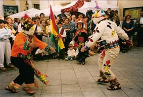
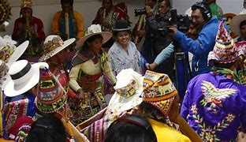

NUESTRA CULTURA
1CAPITAL FOLKLORE DEL PEPARTAMENTO POTOSI
Capital de la provincia Bustillo y Capital Folklórica del departamento de Potosí, una ciudad con gente generosa, hospitalaria y muy unidad por sus costumbres Uncía, conmemora cada 29 de septiembre, su aniversario en honor a su Patrón San Miguel Arcángel, con una fantástica entrada folklórica de magnifico y deslumbrante espectáculo que aprisiona a visitantes turistas, quienes tienen la oportunidad de ver y apreciar con el lente fotográfico de sus modernos celulares, a cientos de alegres danzarines, con disfraces multicolores de rutilantes luces y destellos de piedras preciosas, sostenidas por delgados hilos de plata que adornan en singular coreografía el rico folklore boliviano.
2DANZAS TIPICAS DE UNCIA
Los tinkus, es una danza que representa un enfrentamiento de carácter ritual que se realiza en las
poblaciones del Norte de Potosi y Sur de Oruro Bolivia.
El significado de la palabra Tinku es "encuentro" (de la palabra quechua tinkuy, encontrarse).
Danza pinquillada, En época de lluvia (Jallupacha) y del florecimiento de los nuevos productos,
los habitantes quechuas del norte Potosí agradecen a la
Madre Tierra (Pachamama) con sus danza y música interpretada con pinquillos hechos de madera y cañahueca.
FOTOGRAFIAS DE UNCIA
Nuestra Cultura
NUestro Folklore
Nuestros Antecedentes

Nuestro Encuentro
Nuestros momentos
Nuestra Historia
Nuestros Homenajes
Nuestra pasion
INFORMATE MAS DEL MUNICIPIO DE UNCIA
MASACRE DE UNCIA
Esto produjo que el mayor del ejército Ayoroa diera la orden al “Batallón Técnico” de abrir fuego contra los manifestantes, pero en un hecho llamativo los soldados se negaron a reprimir a los trabajadores, lo que enfureció aun más al mayor Ayoroa, decidiendo este tomar una ametralladora y arremeter contra los obreros asesinado a cuatro obreros e hiriendo a otros doce de los cuales tres morirían en los días sucesivos (estos son los datos oficiales, ya que, según el relato de algunos sobrevivientes, fueron mucho más que cuatro los cuerpos que quedaron desangrados en la plaza, y que luego desaparecieron), este fue el comienzo de la persecución y asesinato de los obreros. En medio de la plaza poblada de muertos y heridos se escucha el grito de una mujer, Aurelia de Tapia Leiza, quién fue callada por los fusiles, para luego caer herida
SECUESTRO DE LOS MINEROS OBREROS
5 de junio, unos 6000 obreros de las regiones vecinas se sumaron a la huelga, que duraría hasta el día 9, cuando, Hernando Siles, delegado del gobierno, y el sacerdote franciscano Fernando González, recomendaron a los obreros aceptar las propuestas para nada convenientes que ofreció el gobierno juntamente a las empresas mineras Rivera, junto a Albarracín y Camacho, fueron puestos en un tren rumbo a la ciudad de Oruro, pero faltando algunos kilómetros para llegar a esta ciudad fueron bajados y desviados a la ciudad de Corque donde se cree que permanecieron encarcelados hasta fines de noviembre de 1923. Ernesto Fernández fue apresado y enviado a la ciudad de Puerto Acosta, donde se desconoce que es lo que sucedió con él. Maldonado logro escapar a la Argentina, donde siguió comprometido en la lucha obrera en las provincias de Norte Argentino.